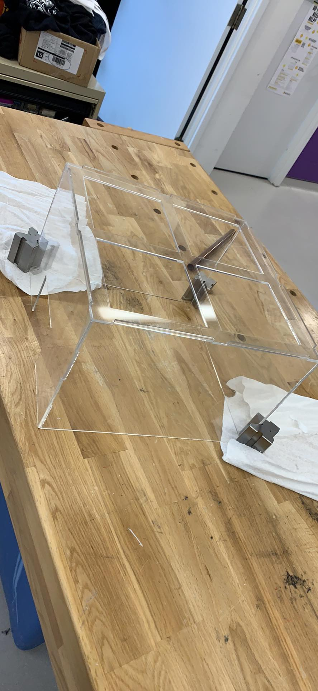
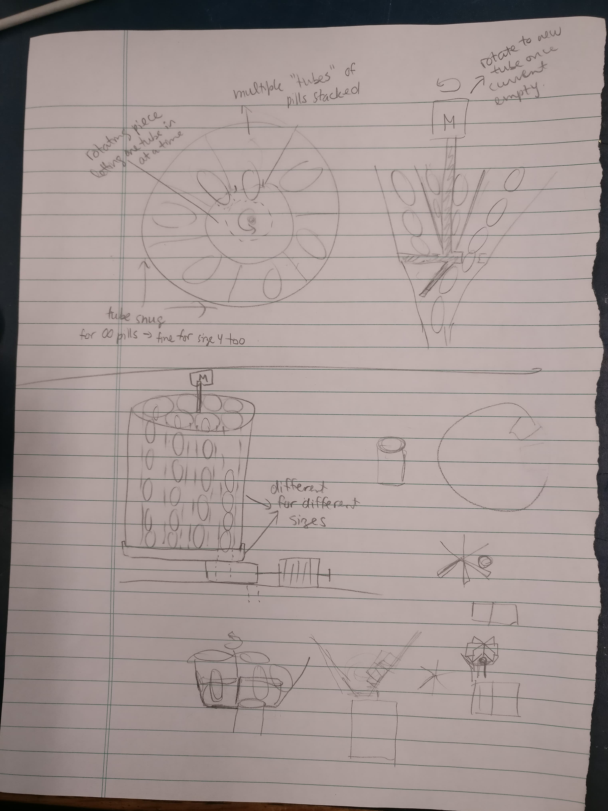
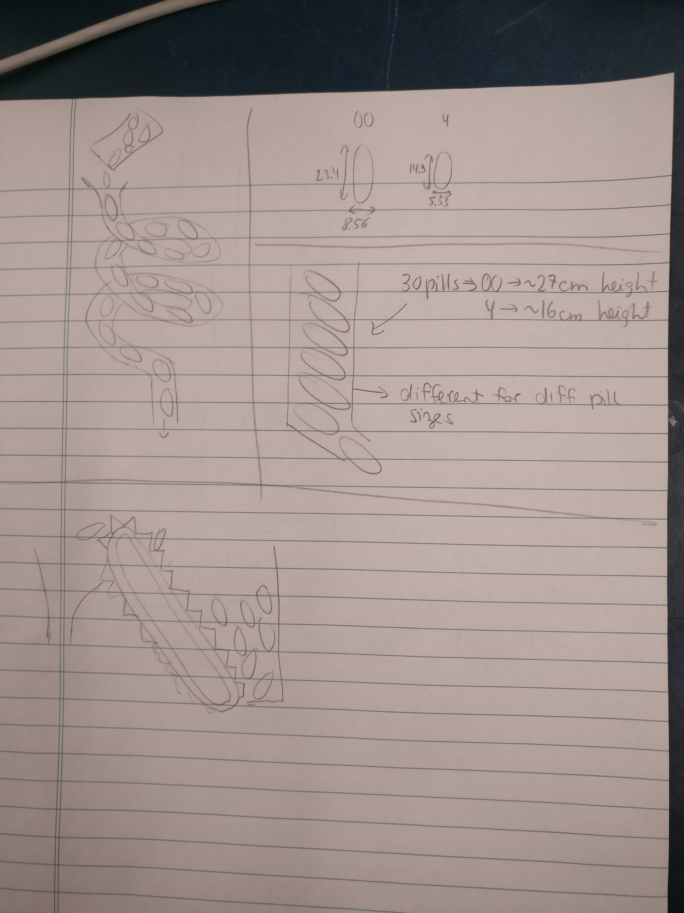
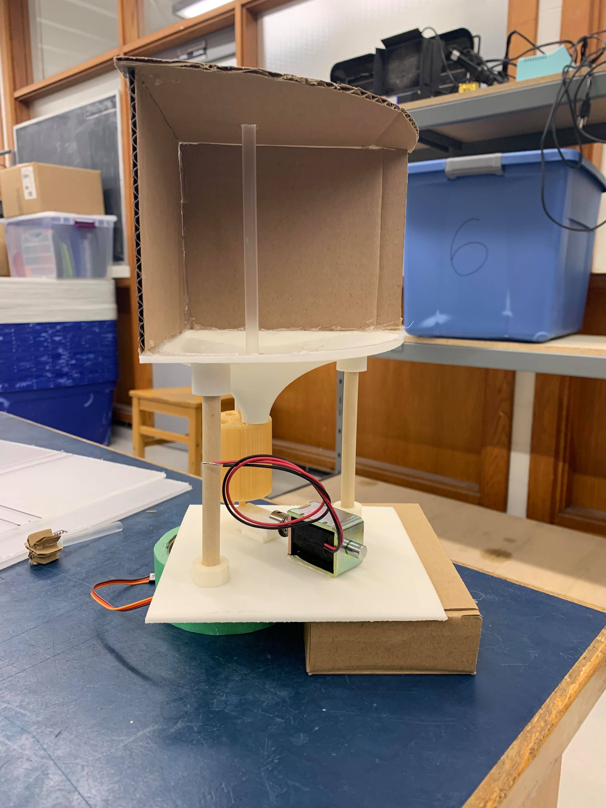
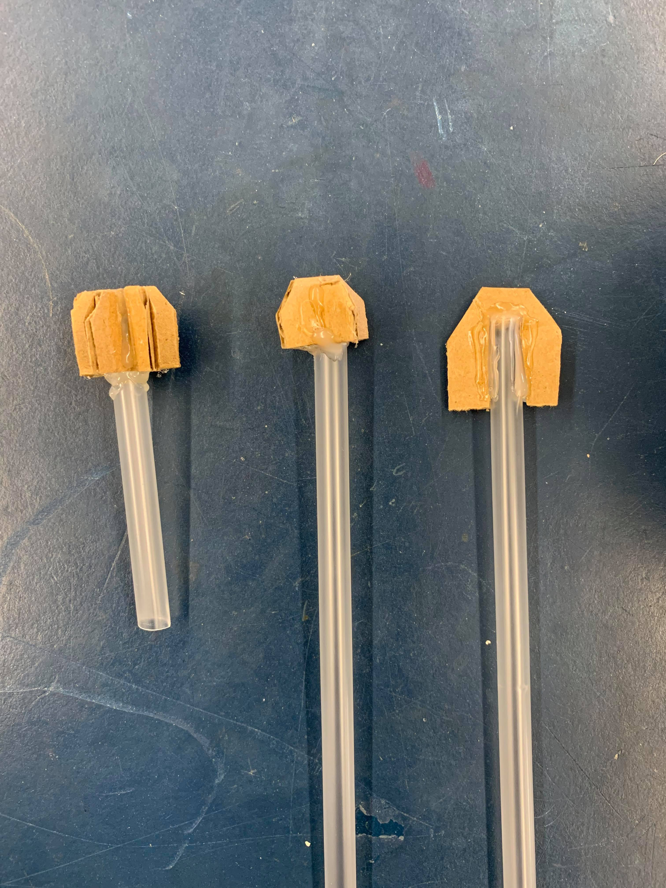

-
Week 2 Update: RIP Raspberry PI & One Quadrant Assembly
Here’s a recap of week 2 and what went down at CapsuleMate headquarters. Following a successful solution to the pill getting stuck in the storage component last week, the team went about assembling a full quadrant of the full pill dispensing apparatus.
Right off the bat, there was a slight hitch, namely that our Raspberry Pi died because of static electricity. This was a problem considering that it controls the solenoid for dispensing, the stirring rods, the alignment cylinder etc. Nevertheless, this unexpected hump in our timeline was a valuable lesson about static electricity and that anything with exposed electronics including the Raspberry Pi is vulnerable to it. We have since replaced the PI and have reviewed ESD precautions, by investing in an anti-static strap, and generally discharging static by touching a grounded metal object.
With the new , we were able to meet our original goal of assembling a full quadrant of the structure and powering it with electronics. We laser cut the base (which will house all the electrical components) out of acrylic sheets. Then, we mounted the dispensing structure above it to see a full quadrant in operation.

As a bonus, we connected the electronics available (servomotors to control the stirring rod and the solenoid to push out pills) to get a quasi-automated structure as seen in the video below. As anticipated, with the aid of the stirring stick the pills dislodge from the storage container, then the pusher piece and solenoid combo successfully isolate one pill to dispense.
Next steps
Assembling this quadrant gave the team an opportunity to observe nuances with the physical build that weren’t noticed in the CAD designs. As expected we discovered a few changes we need to make with the remaining parts before printing them:→ Reduce the size of the base plates to 14cm x 14 cm so they fit together better on top of the base
→ Design a more sturdy stirring rod
→ Support the motor so that it stays aligned in the centre of the storage compartment.
We also discovered that the servo motor we purchased only supported continuous 360 rotation, and cannot turn to a specified angle. Since our cylinder component needs to be turned a certain amount we ordered new motors.In this upcoming week, we will focus on the photosensor and LED combo to detect whether a pill has fallen, which should be the last step to produce a fully automated mechanism.
-
Week 1 Update: When Gravity Just Isn't Enough
Coming into 2019, we moved out of the design phase and started building the first iteration of the full mechanical structure. This includes the dispensing mechanism prototyped early last fall, the storage component, and the tube with the photosensor. To see earlier updates of the dispensing mechanism and some other CAD designs check out our gallery page.
To begin, we started by 3D printing the components and fitting them together. After printing out the bits and assembling one quadrant of the final structure we identified the first hurdle. The pills did not fall out of the storage component as expected. Instead, they jammed in the storage component, totally unreachable by the dispensing mechanism as seen in the video below.
Fluke solution: Frustrated with the problem, we knocked the storage component around a little bit and realized that with enough of a push the pills would dislodge. Then came the problem of how to automate this motion. After pondering for a few days we came up with several creative solutions to address the problem of the jammed pills (the viable ones are listed below):→ A slide or conveyer belt within the storage vault to keep the pills moving. The con to this solution is how to go about accomodating a conveyer with the existing design.
→ Another idea is to make the entire storage container vibrate. One concern with this idea is how much vibration is required to keep the pills moving. In addition, there is difficulty decoupling the storage component from the rest of the chassis.
After many rounds of brainstorming, we came to the easiest solution, a rotating arm in the centre of the storage component to prevent the pills from getting jammed. The benefit of this idea is that it is minimally invasive to our current design and was easy to test out. Immediately, we went about making a quick prototype as seen below.
The straw has an arm at the bottom that sweeps the bottom of the storage funnel and dislodges any stuck pills. Content with the first test we went about automating it by adding a motor to control the rotation.
Success, we will update our SolidWorks model to reflect these changes and continue to move forward!